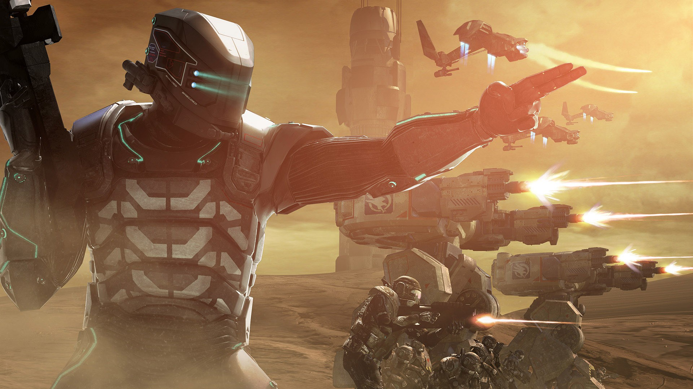
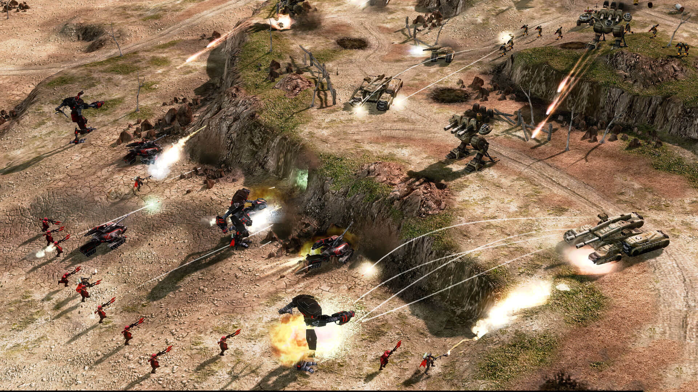
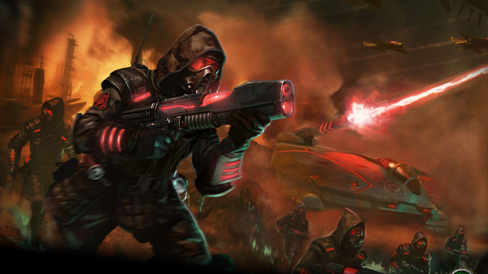
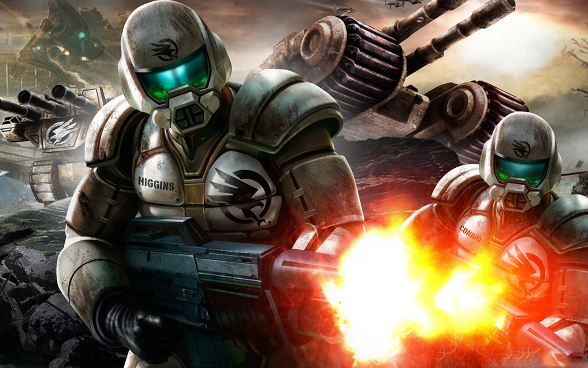

TIBERIUM WARS
Command & Conquer 3: Tiberium Wars is a 2007 science fiction real-time strategy video game developed and published by Electronic Arts for Windows, Mac OS X and Xbox 360 platforms, and released internationally in March 2007. The game is a direct sequel to the 1999 game Command & Conquer: Tiberian Sun, and takes place roughly seventeen years after the game's expansion pack Firestorm, in which Tiberium has grown to become a considerable threat to the planet, leading to the world's political borders and territories being remade into zones denoting the level of contamination by the alien substance. The game's story sees the Global Defense Initiative and the Brotherhood of Nod engage in a new global conflict, this time as major superpowers, only for the war to attract the attention of a new extraterrestrial faction known as the Scrin, which attacks both sides while harvesting Tiberium for its own purpose.
The game brought about several changes in gameplay, some introduced in Command & Conquer: Red Alert 2, including garrisonable structures, neutral tech buildings, unit upgrades and veteran levels, and special powers unique for each playable faction. Other modes include a skirmish battle mode and multiplayer games. The game received favorable reviews, and proved a commercial success following its launch, with a stand-alone expansion pack released a year later on March 24, 2008, titled Command & Conquer 3: Kane's Wrath.
The game brought about several changes in gameplay, some introduced in Command & Conquer: Red Alert 2, including garrisonable structures, neutral tech buildings, unit upgrades and veteran levels, and special powers unique for each playable faction. Other modes include a skirmish battle mode and multiplayer games. The game received favorable reviews, and proved a commercial success following its launch, with a stand-alone expansion pack released a year later on March 24, 2008, titled Command & Conquer 3: Kane's Wrath.

Gameplay
Command & Conquer 3 features returning aspects of gameplay from the previous series. The player oversees the action, ordering multiple units to move and attack targets. The construction yard, a movable base, is the central platform from which the player constructs other structures. Certain structures can then produce units and resources are needed in order to fund the continuous building of structures and units. Typically the player's primary goal is to defeat an enemy by assaulting and destroying their base, while defending their own.
A supporting structure, a crane, can be constructed which can also construct structures. Thus, when multiple production structures of the same type, such as cranes and barracks, are built, the player is given more queues from which to train and produce units and structures. Though these simultaneously save time, funds are deducted for the extra cost as well; careful management of production, training units and funds are key to strategy. When a structure is built, the player can select anywhere near an existing structure to place it, gaining more territorial control.
Tiberium is the sole resource and is usually gathered from fields of Tiberium crystals scattered around the map. The crystals are gathered by harvester vehicles which unload their cargo into refineries, supplying the player with credits which are then automatically used when training units and building structures. Certain maps also feature Tiberium spikes, which, when captured by the faction's engineer unit, allocate a certain number of funds per second. Other neutral structures, such as an EMP weapon, are also present on maps to be captured. Base defense is provided by specialized defensive towers which are placed within a structure's territory.
A supporting structure, a crane, can be constructed which can also construct structures. Thus, when multiple production structures of the same type, such as cranes and barracks, are built, the player is given more queues from which to train and produce units and structures. Though these simultaneously save time, funds are deducted for the extra cost as well; careful management of production, training units and funds are key to strategy. When a structure is built, the player can select anywhere near an existing structure to place it, gaining more territorial control.
Tiberium is the sole resource and is usually gathered from fields of Tiberium crystals scattered around the map. The crystals are gathered by harvester vehicles which unload their cargo into refineries, supplying the player with credits which are then automatically used when training units and building structures. Certain maps also feature Tiberium spikes, which, when captured by the faction's engineer unit, allocate a certain number of funds per second. Other neutral structures, such as an EMP weapon, are also present on maps to be captured. Base defense is provided by specialized defensive towers which are placed within a structure's territory.

SYNOPSIS
Command & Conquer 3: Tiberium Wars takes place within an alternate timeline, in which an alien substance called Tiberium lands on Earth in the 1990s and begins terra-forming the planet's ecology and landscape. Although the substance creates crystals containing precious metals leeched from the surrounding soils, the process also transforms all plant life into alien fauna that produces fatally toxic gas
By the 2040s, the planet's ecological state has reached a critical level, making a number of locations uninhabitable for humans, and generating often violent ion storms that have left several major cities erecting storm barriers to counter these. Since its arrival, Tiberium has become of interest to two factions - the Global Defense Initiative (GDI), who seek to combat the spread and eradicate its presence; and the Brotherhood of Nod, who believes the substance heralds the next step of evolution for humanity, based on the prophecies and lessons by its enigmatic leader Kane.
By the mid 2040s, all countries in the world cease to maintain political presence, either from social and economic collapse, or from passing on political power to GDI. As a result, while country boundaries are still retained, the world is remapped into three different geographical zones based on the levels of Tiberium contamination - Red Zones denote areas too toxic for human habitation, and consist of high concentrations of Tiberium; Yellow Zones denote considerable contamination, house most of the world's population, and is primarily controlled by Nod; Blue Zones denote low to minimal contamination, and house the last remnants of civilised life that is protected by GDI. Both GDI and Nod, as a result, slowly have evolved into the world's major superpowers, and retain constant distrust of the other.
By the 2040s, the planet's ecological state has reached a critical level, making a number of locations uninhabitable for humans, and generating often violent ion storms that have left several major cities erecting storm barriers to counter these. Since its arrival, Tiberium has become of interest to two factions - the Global Defense Initiative (GDI), who seek to combat the spread and eradicate its presence; and the Brotherhood of Nod, who believes the substance heralds the next step of evolution for humanity, based on the prophecies and lessons by its enigmatic leader Kane.
By the mid 2040s, all countries in the world cease to maintain political presence, either from social and economic collapse, or from passing on political power to GDI. As a result, while country boundaries are still retained, the world is remapped into three different geographical zones based on the levels of Tiberium contamination - Red Zones denote areas too toxic for human habitation, and consist of high concentrations of Tiberium; Yellow Zones denote considerable contamination, house most of the world's population, and is primarily controlled by Nod; Blue Zones denote low to minimal contamination, and house the last remnants of civilised life that is protected by GDI. Both GDI and Nod, as a result, slowly have evolved into the world's major superpowers, and retain constant distrust of the other.

Development
A sequel to Command & Conquer: Tiberian Sun had been expected since the game's release in 1999. Work on such a sequel was believed to have been started at Westwood Studios in 2001, but Electronic Arts decided to shift the focus of the would-be successor to Tiberian Sun from a science fiction theme to a modern theme based on contemporary conflicts, the result being the title of Command & Conquer: Generals and other SAGE engine based games.
Developers still retained the Command & Conquer 3 idea (tentatively named 'Incursion'), intending it to be an update of the original C&C game in terms of gameplay and setting. Just prior to the release of Generals however, EA announced that Westwood Studios (Las Vegas) would be closing and would be consolidated into EA Los Angeles. This merger split the original Westwood team, with some of its members not being willing to relocate and quitting to form the company Petroglyph Games, with the remainder moving to Los Angeles to work at the newly consolidated studio. With this, the development of Command & Conquer 3 was effectively put on hold.
Developers still retained the Command & Conquer 3 idea (tentatively named 'Incursion'), intending it to be an update of the original C&C game in terms of gameplay and setting. Just prior to the release of Generals however, EA announced that Westwood Studios (Las Vegas) would be closing and would be consolidated into EA Los Angeles. This merger split the original Westwood team, with some of its members not being willing to relocate and quitting to form the company Petroglyph Games, with the remainder moving to Los Angeles to work at the newly consolidated studio. With this, the development of Command & Conquer 3 was effectively put on hold.
Gameplay Trailer